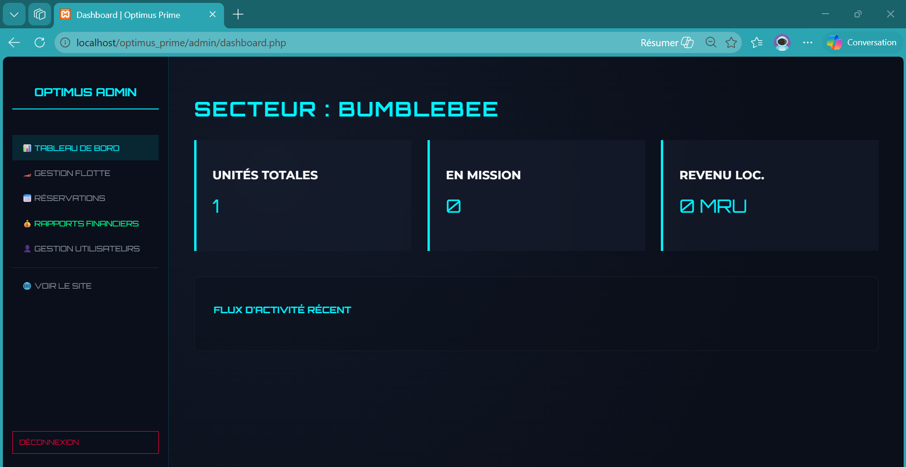
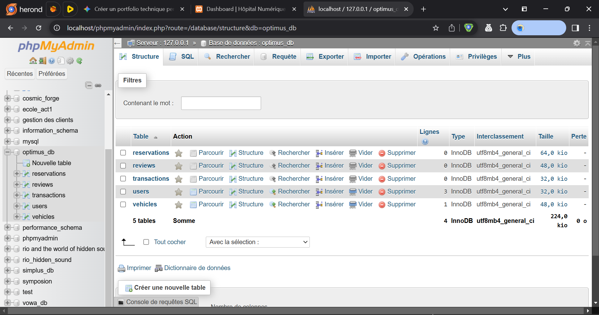

Créateur de l'écosystème Optimus Prime
Spécifications : PHP 8.x, MariaDB (XAMPP), Backend Architecture.


En tant que concepteur principal, j'ai bâti cette interface d'administration pour centraliser la gestion de flotte. Ce système est le cœur opérationnel de l'univers Optimus, gérant dynamiquement les flux de données complexes en temps réel.
optimus_db (Users, Vehicles, Transactions).